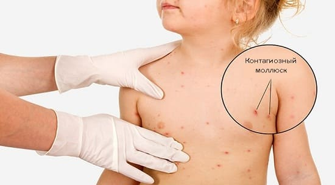
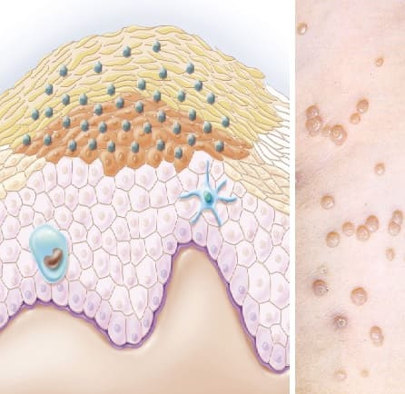

Если у вашего ребенка на коже есть крошечные наросты, которые выглядят как нечто среднее между бородавкой и волдырем, это может быть контагиозный моллюск (КМ). Это распространенное безобидное поражение кожи, вызванное вирусом. Как подразумевает название, вирус передается от одного ребенка другому. Хотя у большинства детей эти маленькие бородавкоподобные наросты не вызывают никаких ощущений, иногда они могут зудеть и подвергаться повторному заражению из-за постоянного расчесывания. Как правило, тревога родителей по поводу этих наростов намного серьезней, чем сами наросты. Контагиозный моллюск выявляется примерно у 20% детей.
КАК РАСПОЗНАТЬ
Заболевание начинается с появления одной или двух маленьких папул. Затем они вырастают в округлые папулы и волдыри диаметром 2—5 мм, немного напоминая начальные стадии ветряной оспы. У некоторых может образоваться белая головка на красном основании. Через увеличительное стекло вы иногда сможете разглядеть ямочку в середине папулы. Чаще всего их можно обнаружить в области груди, рук и подмышек.
ЧТО ДЕЛАТЬ
При контагиозном моллюске обычно просто выжидают: он, как правило, проходит сам по себе за срок от 6 месяцев до 3 лет. КМ быстро распространяется, но по мере этого ребенок постепенно начинает вырабатывать антитела против этого вируса. Длительность периода, за который заболевание проходит, зависит от того, насколько эффективно иммунная система ребенка начинает с ним бороться. Если КМ доставляет беспокойство вашему ребенку, выясните, насколько сильное. Если наросты не зудят, не инфицированы и не вызывают раздражительности ребенка, позвольте природе самой разобраться с этой болезнью, а организму — избавиться от нее.

КАК РЕБЕНОК ЗАРАЖАЕТСЯ ВИРУСОМ КОНТАГИОЗНОГО МОЛЛЮСКА Подобно многим вирусам, он распространяется, когда ребенок расчесывает папулы, загоняет вирус под ногти и затем царапает другую часть своего тела или трогает другого ребенка. Вирус КМ также может распространяться при совместном использовании полотенец и одежды и очень часто — при занятиях контактными видами спорта. |
Но если они зудят, мешают вашему ребенку, он постоянно их чешет или становится чрезвычайно напряженным, попробуйте эти варианты лечения:
Как правило, контагиозный моллюск проходит, не оставляя шрамов. В действительности многие считают, что вероятность образования рубцов выше при агрессивном лечении. Чем темнее кожа ребенка, тем выше вероятность рубцов. Очень редко рубцы остаются навсегда.
Здоровье ребенка от докторов Сирс / Сирс У. и др.